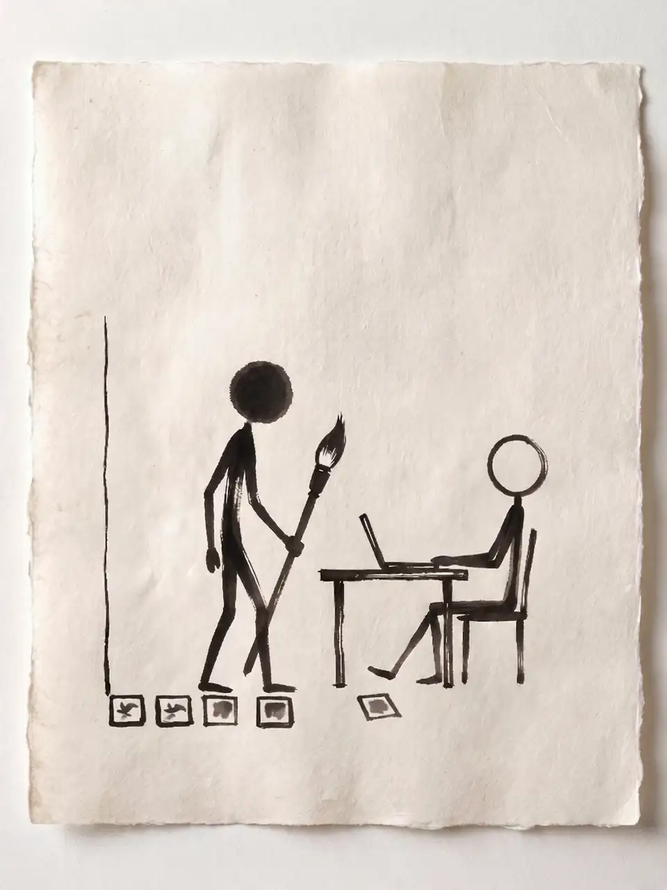
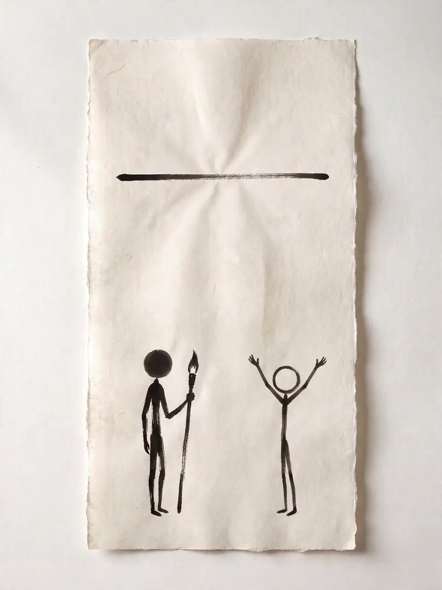
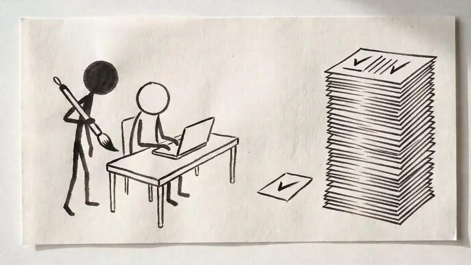
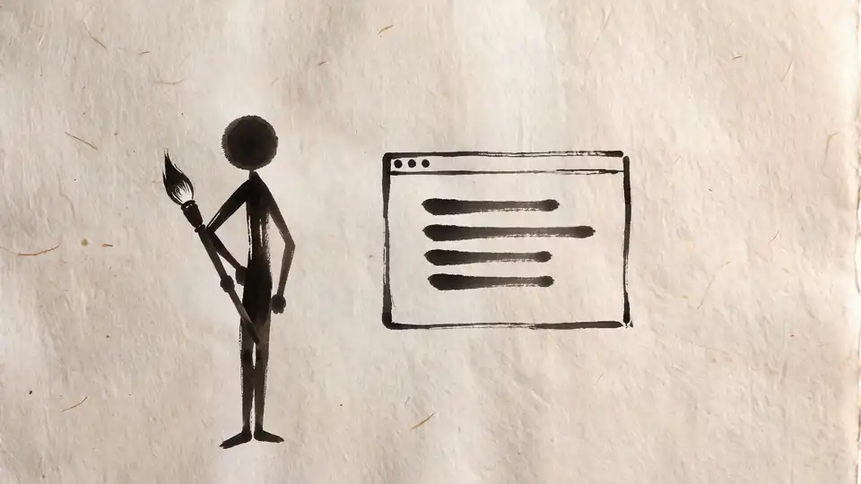

01 / ABOUT
派手なDXはやりません。
ツールを入れて終わりのコンサルにはなりません。導入したものが現場で回り、社内の人だけで運用できるようになるまで付き合います。関東では当たり前になっていることを、秋田の会社でも当たり前にする。それがANOMの仕事です。
01
Autonomous
自律
ゴールはANOMがいなくても回る状態です。手順書と引き継ぎまで作って、自走できたら手を離します。
02
Minimalism
簡潔
新しい契約を増やす前に、いま払っているのに使われていない機能から手を付けます。それだけで解決する課題が実際にあります。
03
On Site
現場主義
資料を送って終わりにはしません。秋田県内なら現場に伺い、実際の画面と書類を見ながら一緒に手を動かします。
THE GAP ／ 開いていく差
放っておくと、
差は開く。
WHY ANOM
ANOMの4つの約束。
自分も商売をやって、一度たたんでいます
人を雇う重さも資金繰りの不安も、店を閉める悔しさも実体験で知っています。だから机上の正論ではなく、その会社が続けられる提案をします。
県内の建設会社の現場に入っています
電子契約の導入、書類仕事の整理、バックオフィスの一部自動化。経営者の隣で手を動かしています。ムダを削る手順は業種が違っても変わりません。それを現場で確かめながらやっています。
最初の提案は、たいていゼロ円です
新しいツールを勧める前に、導入済みのツールで眠っている機能を洗い出します。無料診断では今日からできるゼロ円改善を、その場で1〜3個お渡ししています。
自走できたら、契約は終わりにします
隣で一緒に手を動かして、社内の人だけで回せるようになったら卒業です。依存させ続けるのはANOMの売上にはなっても、御社の力にはならないからです。
02 / USECASES
こんな現場で効きます。
ここから先は、あくまで想定の例です。出てくる数字も実績ではありません。どこから手をつけるかは、業種や規模にあわせて一緒に探しましょう。
CONSTRUCTION ／ 建設・土木
日報と写真整理を仕組みで減らす
- 課題
- 日報・写真整理・書類づくりが現場の時間を奪っている
- 施策
- OCR（文字の自動読み取り）と業務フロー自動化で事務を仕組み化
- 成果
- 事務時間を削減し、現場の仕事に集中できる体制
- 期間
- 診断〜導入 2〜3ヶ月
RETAIL & FOOD ／ 小売・飲食
発注の勘をデータで補う
- 課題
- 発注がベテランの勘頼みで、廃棄も欠品も読めない
- 施策
- 売上データの可視化とAIによる発注提案
- 成果
- 発注の標準化と、廃棄ロスの削減
- 期間
- 診断〜導入 2〜4ヶ月
MANUFACTURING ／ 製造
検査の目を若手に引き継ぐ
- 課題
- 検査・判断が熟練者に集中し、技能継承が進まない
- 施策
- 画像AIによる検査補助と、社内ナレッジ検索の整備
- 成果
- 若手が自走できる検査・判断の体制
- 期間
- 試験導入 1〜3ヶ月 → 効果を見て本導入
SERVICES ／ サービス・士業
問い合わせの一次対応を自動にする
- 課題
- 問い合わせ対応と定型文書づくりに時間を取られる
- 施策
- AIによる一次対応と、文書下書きの自動化
- 成果
- 対応スピードの向上と、本来業務への集中
- 期間
- 診断〜導入 1〜2ヶ月
03 / SERVICES
ANOMにできること。
支援は大きく3つです。入口はどれも無料の棚卸しから始まり、戦略づくりから現場への定着までまとめて任せられます。
眠っている道具の棚卸し
新しい道具を買う前に、一度だけ棚卸しさせてください。すでに契約しているのに使えていないツールを一緒に洗い出して、今日からできるゼロ円改善をその場でお見せします。所要は30〜45分、訪問でもオンラインでも可能です。売り込みはしません。秋田県内なら業種は問いません。
その場で見る4つ
- いま入っている道具の一覧（会計・勤怠・グループウェア・Excel運用など）
- そのうち、使われていない機能
- まだ紙でやっている作業
- 人・紙・お金、どこに一番ムダが溜まっているか
持ち帰りその場でゼロ円改善を1〜3個。後日、A4ペラ1枚の棚卸しメモをお渡しします。
次の一歩まず自分たちで試す → うまくいけばOK → もっと手を入れたい所だけ、必要ならご一緒に。

毎月払ってるのに、
使ってない
それ、ゼロ円で
できます
この機能で
足りてたんだ
眠っている道具の棚卸し
導入・伴走 — AI・DXコンサルティング
課題の整理から導入、定着まで。経営と現場の両方に並走する、いちばんの主力サービスです。関わり方は2つあります。そばで並走し続ける「月額顧問」と、ゴールを決めて取り組む「プロジェクト型」。気になるほうを選んでください。
こんな方へ
- 何から手を付けるべきか、整理したい
- ツールは入れたが、活用が進んでいない
01 ／ ADVISORY
月額顧問
経営と現場の、外付けの頭脳。
- 経営・事業判断へのAI／DX相談
- ツール選定の中立アドバイス
- 月次の振り返りと次アクション設計
- 導入後の継続サポート
02 ／ PROJECT
プロジェクト型
課題ごとに、期間と成果を決めて。
- 現状診断（DX・AI準備度調査）
- 業務フロー改善設計
- AIツール導入支援（設定・研修）
- 導入後の定着サポート
成果イメージ事務作業の削減と、自社で回せる運用体制（※想定）
進め方無料診断 → 現状診断 → 設計 → 導入 → 定着

導入前
導入後

仕事が、みるみる片づいていく
育てる — 研修・人材育成
研修の題材は御社の実際の業務です。翌日からそのまま使える形にして渡すので、学んだことが現場に残ります。
こんな方へ
- 社員がAIを使える状態にしたい
- 自分自身が学び直したい
成果イメージ現場が日常業務でAIを使いこなす状態（※想定）
進め方ヒアリング → プログラム設計 → 実施 → 定着フォロー

現場で感じるムダを、
現場の目線で削る。
いまご覧のサイトも、この手で
つくる・支える — Web制作・保守・開発
サイトの制作から公開後の更新・保守まで一括で引き受けます。いまご覧のこのサイトも、ANOMが設計から実装まで自分の手で作ったものです。
こんな方へ
- サイトが古い、または持っていない
- 作った後の運用まで任せたい
成果イメージ集客の入口と、止まらない運用体制（※想定）
進め方要件整理 → 設計・制作 → 公開 → 運用・改善
FLOW ／ 支援の流れ
-
ここまで無料
01
無料診断
現状と困りごとを伺います（訪問またはオンライン・30〜45分）
-
02
現状診断
業務とデータを拝見し、優先順位を整理
-
03
設計
進め方・ツール・体制を決める
-
04
導入
小さく試し、効果を確かめて広げる
-
05
定着・運用
自社で回せる状態にして引き渡し
PRICING ／ 料金の考え方
月額顧問
月額制です。関与の深さ（相談中心から実務の並走まで）で段階を分けているので、小さく始められます。目安は月5万円からです。内容と訪問頻度に合わせて決めます。
プロジェクト型
範囲と期間、成果物を決めて、個別にお見積もりします。現状診断だけの単発のご依頼も大丈夫です。Webサイト制作は18万円から。研修や単発の改善は、内容を伺ってお見積りします。
共通の約束
初回の診断は無料です。お見積もりには作業範囲をはっきり書きますし、先に合意していない追加費用は、あとから出しません。
具体的な金額は、無料診断で状況を伺ってからお出しします。
CLOSE THE GAP ／ ANOMの役割
その差を、埋める。
FOR INDIVIDUALS ／ 個人の方へ
個人の方も歓迎します。
企業だけでなく個人も対象です。AIを学びたい方の講座も、自分のサイトを持ちたい方の制作も、1人から受けられます。
04 / FAQ
よくある質問
ここに載っていない疑問も、気軽に聞いてください。初回の診断は無料です。
Q1AIを導入したことがない企業でも大丈夫ですか？
はい、むしろ初めての会社さんがほとんどです。まず現状を見せてもらって、「何から手をつけるか」を一緒に整理するところから始めます。いきなりツールを入れることはありません。
Q2費用はどのくらいかかりますか？
顧問は月5万円から、Webサイト制作は18万円からが目安です。プロジェクトの内容で変わるので、無料診断のあとに正式なお見積りを出します。先に合意していない費用をあとから足すことはありません。
Q3秋田県外でも対応できますか？
はい、全国に対応しています。基本はリモートで、必要があれば現地にも伺います。
Q4どのくらいの期間で成果が出ますか？
試験導入（PoC）は1〜3ヶ月、本格導入は3〜6ヶ月が目安です。中身の複雑さや社内の体制によって前後しますが、なるべく早く手応えが出るように進めます。
Q5データが少なくてもAIは使えますか？
データの量や質によってやり方は変わりますが、少なくても使える手はあります。まずは今あるデータを見せてください。何ができそうか、診断させてもらいます。
Q6社内の人間だけで運用できるようになりますか？
自社で回せるようにするお手伝いは、いちばん大事にしているメニューのひとつです。導入したあとも自分たちで回せるよう、研修やドキュメント整備、技術の引き継ぎまで一緒に進めます。そうやって自走できるようになったら、ちゃんと手を離します。頼られっぱなしにはしません。
Q7追加費用があとから出ることはありませんか。
先に合意していない費用は、あとから請求しません。作業の範囲が変わるときは、必ず金額を先に提示して、ご了承いただいてから進めます。
Q8相談したら、契約しないといけませんか。
いいえ。無料診断とゼロ円改善のお渡しだけで終わって構いません。合うかどうかを確かめてから決めてください。
05 / COMPANY
ANOMについて。
PROFILE ／ 代表挨拶
一度、自分の店を
たたんだ人間です。
AIの話をしに来たわけじゃありません。自分も現場に立って、自分の店を持っていました。人を雇って、シフトを組んで、お金の心配をして——そして一度、その店をたたんでいます。だから机の上だけで語るコンサルにはなれませんでした。業種は違っても、現場のしんどさはたぶん同じだと思います。
県内の建設会社のDXにも伴走しています。電子契約を入れたり、散らかった業務を整理したり、バックオフィスの仕事を一部自動化したり。現場に通うほど、「ムダを削る」という考え方は業種が変わっても効くと実感します。
やることは、いたってシンプルです。まずは今あるものを使い倒す。丸投げはせず、隣に座って一緒に手を動かす。そして自分たちだけで回せるようになったら、手を離す。ずっと頼られ続けるのは、自分の仕事じゃないと思っているので。
代表菊地 隆雅
COMPANY ／ 会社概要
- 屋号
- ANOM（アノム）※法人化準備中
- 代表
- 菊地 隆雅
- 所在地
- 秋田県
- 事業内容
- AI・DXコンサルティング（月額顧問／プロジェクト型）、研修・人材育成、Web制作・運用、保守・管理、マニュアル作成、システム開発
- 対応エリア
- 全国（リモート対応）／秋田県内は訪問可
- 対応時間
- 平日 9:00–18:00（JST）
- 連絡先
- info@anom-ai.com
06 / CONTACT
眠っている道具を、
見せてください。
初回の診断は無料です。新しい何かを買う前に、まずは“使わないまま眠っている道具”を見せてください。
「何から始めればいいか分からない」——そんな入口でも大丈夫です。会社のことでも、個人の講座やサイトのことでも、ここからお気軽にどうぞ。
フォームが苦手な方は、メールでどうぞ — info@anom-ai.com
フォームもメールも、返信は代表本人からお送りします。